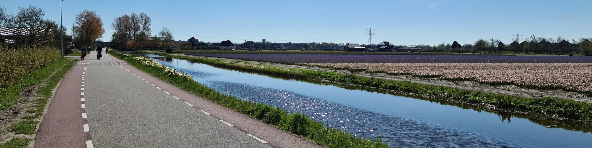

Knowledge and working habits
Capturing, organising and owning your work: the habits under every personal and company system.

 Building a Second BrainTiago Forte · 2022Capture, organise, distil, express. A personal knowledge system is the smallest version of a company brain.Read more →
Building a Second BrainTiago Forte · 2022Capture, organise, distil, express. A personal knowledge system is the smallest version of a company brain.Read more → The Checklist ManifestoAtul Gawande · 2009A checklist is not a lack of expertise; it is what expertise does when the stakes are real.Read more →
The Checklist ManifestoAtul Gawande · 2009A checklist is not a lack of expertise; it is what expertise does when the stakes are real.Read more → Extreme OwnershipJocko Willink & Leif Babin · 2015If you build it, you own it — including the import that silently stopped running.Read more →
Extreme OwnershipJocko Willink & Leif Babin · 2015If you build it, you own it — including the import that silently stopped running.Read more → Getting Things DoneDavid Allen · 2001The original inbox discipline: everything gets captured, clarified and given one next action. Email triage starts here.Read more →
Getting Things DoneDavid Allen · 2001The original inbox discipline: everything gets captured, clarified and given one next action. Email triage starts here.Read more →